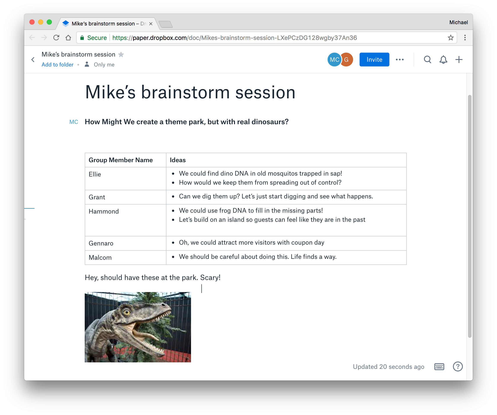
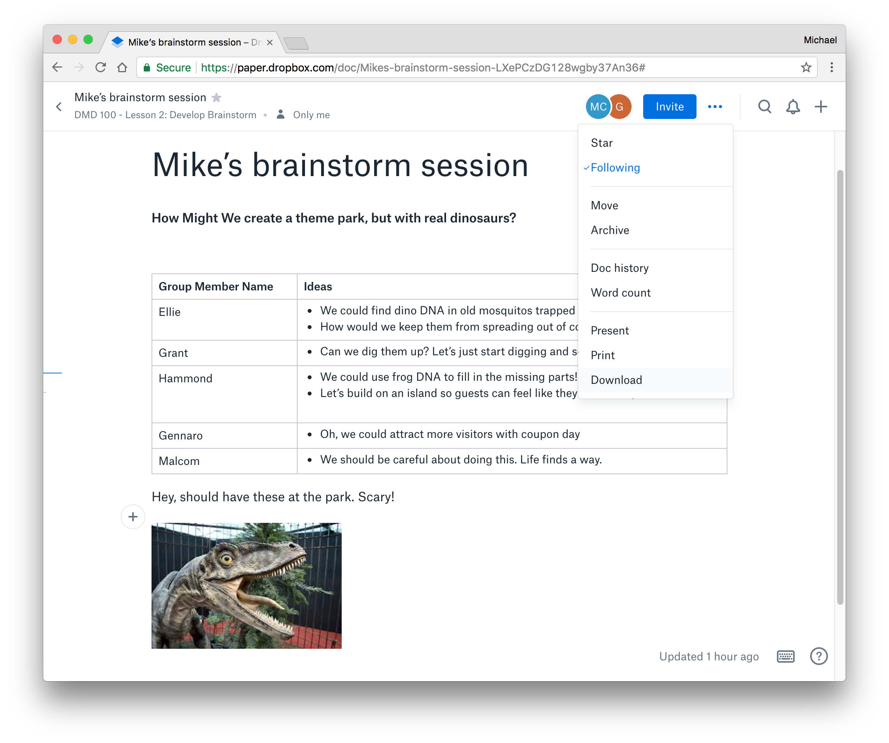
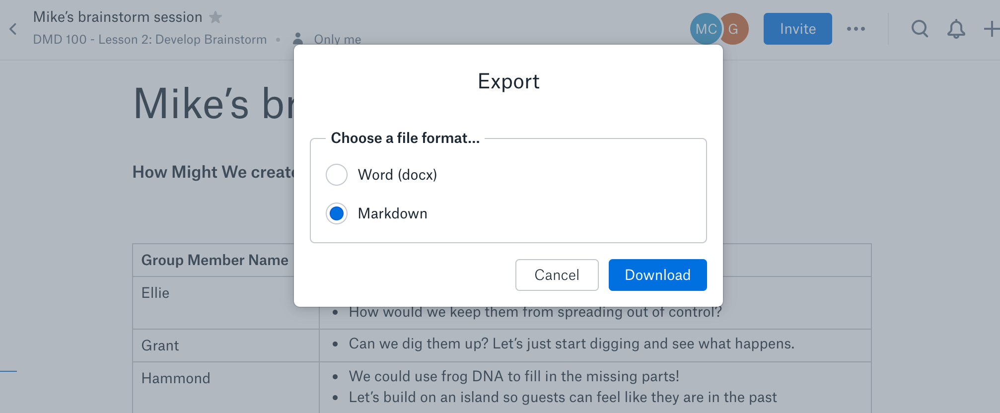

Brainstorm
Now that you have a How Might We question, it's time to brainstorm some ideas to try to solve for the question. Generating ideas by yourself can be fairly difficult if you are new to this process. Even experienced designers benefit from working in groups because typically the array of ideas generated in a discussion is far larger than when working alone. For this step, you will partner up with small groups to brainstorm ideas for each person's project. You will use the free Dropbox tool called Paper, to collaboratively contribute ideas to your group members projects.
Note: If there is a timezone issue, and your group can not find an agreeable meeting time, contact your instructor.
Note 2: If you have technical issues, please see "Solving technical issues" section.
View an Example Paper brainstorm session.

Materials and tools
- Sign up for a free account on https://paper.dropbox.com/
- Computer with microphone and steady Internet connection
- Video conference: Penn State Zoom
Roles and Rules
Discussion Rounds
- Team Leader: A Team Leader is randomly assigned and is responsible for coordinating the group's brainstorm session.
- The Team Leader will coordinate a meeting time and send out a video meeting link with the group.
- There will be one brainstorming round for each person in the group.
- Each member should access the Paper website ahead of the brainstorm session and locate the document's share link.
- Each round will focus on a different person's HMW question.
- Facilitator Role: For each round, the person currently in focus for the discussion will be the facilitator of the discussion, and is responsible for downloading their finished whiteboard and uploading the image to the Studio.
- The facilitator is responsible for keeping time.
- Responsible for downloading their own How Might We...? document in Word (docx) format.
- Spend about 10-15 minutes per round.
Brainstorming
- Quantity over quality. The goal is to generate as many ideas as possible.
- Defer judgement. Silly and outlandish ideas are just as useful as, and sometimes more exciting than, sensible ideas.
- Be positive. When building upon others' ideas, use "yes, and also" instead of "but" or "well." These small language nuances change the tone of the discussion to feel more supportive and inclusive.
- Focus. It's easy to derail a brainstorming session. If it happens, refocus on the task at hand.
- Simplify. If an idea takes two sentences to describe, try simplifying it to the core idea using as few words as possible.
Instructions
Before the brainstorm session
- Read the Roles and Rules.
- Access https://paper.dropbox.com/.
- Team Leader: Collect group member links to share with group (contact group members prior to the call via email if needed). Setup a group video, and invite group members.
During the brainstorm session
- Introduce yourselves with the chat tool or the live call feature.
- Decide on the order you will all go.
- First Facilitator: Set a timer for 15 minutes.
- The Facilitator will write the HMW question at the top of the document.
- The group will spend up to 15 minutes generating ideas for the HMW question.
- After 10 minutes: As a group, briefly discuss which ideas you like.
- The next facilitator sets a timer for 15 minutes.
- Repeat steps 4-6 until all group members have taken their turn. You are now finished the brainstorming session.
- Make sure download the Paper doc, in Word (docx) format.
- Thank each other for their contributions and end the session.
Download and export instructions
- Once you have finished with the brainstorm, click on the 'more' menu button (three dots) and choose "Download."
- Select Word (docx) format and again choose "Download."
- Once the file has been generated, choose "Download" again.


Post work to the Studio
Use the file format indicated in each step. You must obtain prior approval to deviate from these upload requirements. Please check that your work has uploaded properly.
- Follow download and export instructions to download the brainstorm document in Word (docx) format.
- Upload the
.docxfile to studio.